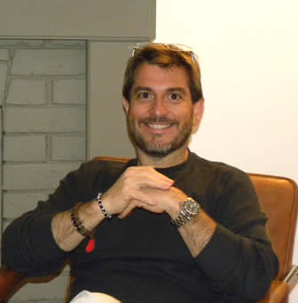

Matricula Profesional No. 25700 – 13942
Dirección Oficinas Calle 105 # 19 A - 42, Bogotá D.C.
Teléfonos (PBX) y Fax (57 1) – 476 0055 / 696 3388
E-Mail sammywaldman@hotmail.com
Universitarios: Pontificia Universidad Javeriana Bogotá D.E., 1.983
Titulo Obtenido: ARQUITECTO
Secundaria: Colegio Colombo Hebreo Bogotá D.E., 1.978
Seminario Feng Shui Arte Milenario sobre Armonización de la Ubicación - Bogotá, (Colombia), 1.986.
Astrología para Profesionales. Seminarios Varios - Bogotá, (Colombia), 1.985-1998.
Curso Administración Financiera Price Waterhouse - Bogotá, (Colombia), 1.983-1.992
Participación Congreso de Arquitectos Javerianos - Bogotá, (Colombia), 1.989.
Seminario Administración de Obras de Construcción. Universidad Javeriana - Bogotá, (Colombia), 1.987.
Capacitación Laboral. Pontificia Universidad Javeriana - Bogotá, (Colombia), 1.983.
Seminario Coordinación y Dirección de Comunidades - Jerusalén (Israel), 1.982.
Seminario Realidad urbana - Sao Paulo (Brasil), 1.982.
Seminario El Individuo frente a la Comunidad - Lima (Perú), 1.980.
Foro del Espacio Urbano - Bogotá, (Colombia), 1.980.
Seminario La Comunidad y sus Problemas - San José (Costa Rica), 1.979.
Seminarios formación de Grupos - Quito (Ecuador), 1.977.